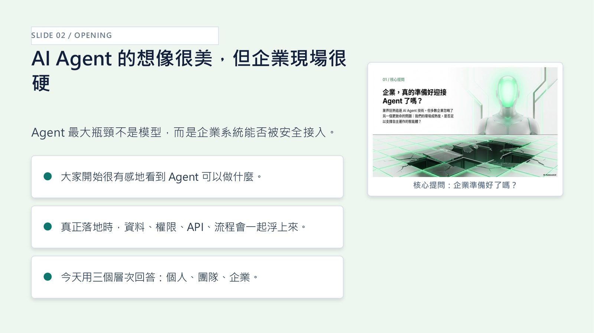
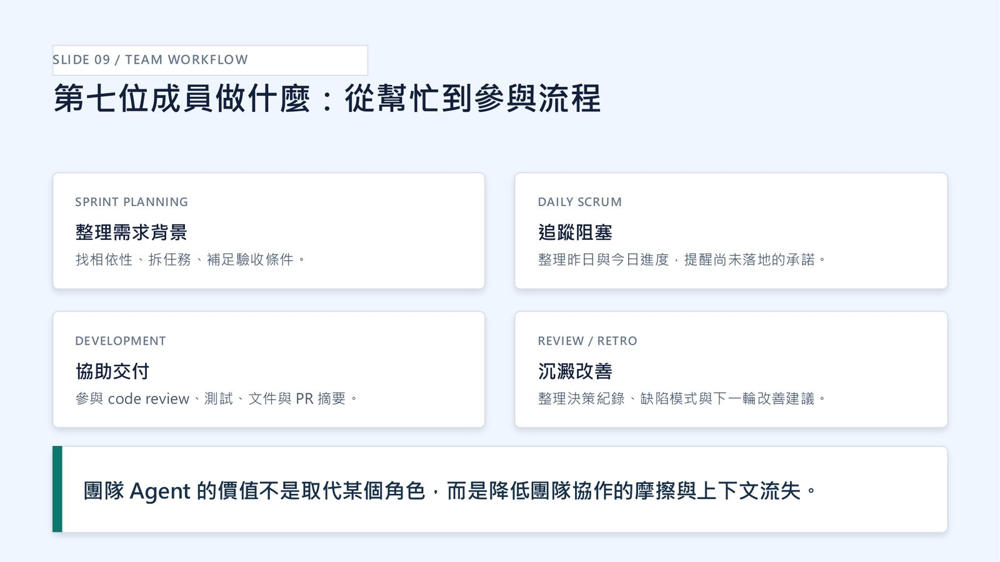
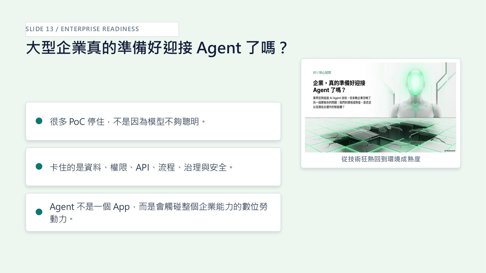
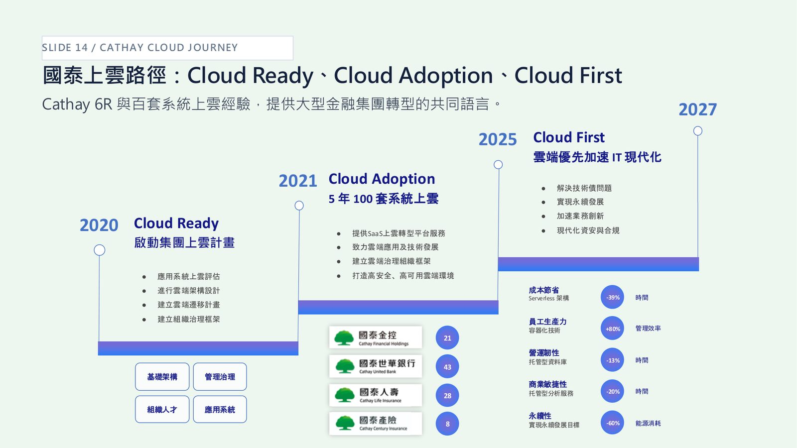

摘要
本場演講深刻剖析企業導入 AI Agent 面臨的真實痛點：阻礙 PoC 落地的瓶頸通常非模型智能，而是數據、權限、API 與安全治理等企業環境成熟度。講者顏勝豪以國泰金控上雲與 AI 實戰經驗出發，提出從 Cloud First（數位基礎建設）演進至 Agent First（數位勞動力）的戰略路徑。技術上倡導建立「企業級 Agent Platform」，涵蓋 Agent Runtime、身份與工具目錄管理、意圖與安全護欄（Guardrails）、即時觀測（Telemetry）及生命週期管理，並在團隊層面推動 6+1 人的 AI Scrum 協作模式（如 Slack 上的 Claude Tag）。核心啟示在於：大型企業應借鏡 CloudOps 與 MLOps 經驗推動 AgentOps，透過前期建置的 Landing Zone、IAM 與 API 標準化，為 AI Agent 的安全接入打下決定性地基。
重點整理
- 個人 Agent 經驗（40+ 天使用 OpenClaw/Toto）顯示 Agent 已能持續執行任務、沉澱為可重複 Skill，但也已碰到權限、金流等企業級邊界問題
- 團隊 Agent 以「AI Scrum Team 的 6+1 模式」為例，說明 Claude Tag 讓 AI 成為存在於 Slack 頻道、共享上下文、可追蹤進度的「第七位成員」
- 企業級 Agent 的真正挑戰不是模型智慧，而是資料、權限、API、流程與治理；打造一個 Agent 容易，管理五百個才是挑戰
- 國泰金控過去 5 年完成 100 套系統上雲，Cloud First 階段建立的 Landing Zone、IAM、治理、安全與標準化流程，其實就是 Agent 未來能安全工作的基礎
- 提出 AI Agent 依賴的企業核心能力框架：Identity、Knowledge、Tool/API、Workflow、Observability、Security、Audit、Lifecycle，並主張 AgentOps 可借鏡 CloudOps、DevOps、MLOps、FinOps 的成熟做法
重點圖片／架構圖




個人 Agent：從聊天視窗到真正做事的助理
講者分享超過 40 天使用 OpenClaw/Toto 的親身經驗，指出 Agent 的關鍵頓悟時刻在於它不再只是回答問題，而是能持續做事，例如新聞摘要、全文抓取、Podcast 製作等日常例行工作流，並累積出 30 多個 One Page、12 項 Skill。但講者也強調，個人使用情境已經會碰到權限、金流、個資與外部帳號等企業級問題：可以協助監控營位，但刷卡付費等操作必須拒絕，顯示個人場景的安全邊界思考同樣適用於企業。
團隊 Agent：AI Scrum Team 的第七人
講題以 Anthropic 推出的 Claude Tag 為例，說明 AI 如何從個人對話框走進團隊協作頻道。Claude Tag 讓團隊成員可在 Slack 頻道中直接指派任務給共享身份的 @Claude，它具備累積上下文、非同步工作與企業控管等特性，成為 Sprint Planning、Daily Scrum、Development、Review/Retro 等流程中的常駐第七位成員。講者特別指出，同樣是 Agent，若設計成「監控式」會讓團隊感到壓力，若設計成「助攻式」則能降低協作摩擦，兩者對團隊感受影響巨大。
企業級 Agent：從技術狂熱到環境成熟度
許多企業 Agent PoC 卡關，並非因為模型不夠聰明，而是資料、權限、API、流程、治理與安全等企業現實條件尚未到位。講者指出大型金融集團面對的現實條件包括監理合規需在平台設計階段納入、身份與權限存取邊界須事先設計、既有主機與舊 API 不會消失，以及跨公司治理與組織共識的建立，這些都是 Agent 從技術展示走向規模化落地必須跨越的門檻。
Cloud First 其實是在為 Agent First 打底
講者以國泰金控過去的雲端轉型歷程為例：從 Cloud Ready（啟動集團上雲計畫、應用系統評估與遷移計畫）、Cloud Adoption（5 年完成 100 套系統上雲、建立雲端治理組織框架），到 Cloud First（雲端優先加速 IT 現代化、解決技術債、加速業務創新），過程中累積的 Landing Zone、IAM、治理、安全與標準化流程，回頭看正是 Agent 能夠安全工作的基礎建設，讓企業「以為在為 Cloud 做準備，其實也在為 AI 做準備」。
AI Agent Platform 與治理轉移
講者提出 AI Agent 依賴的企業核心能力框架，涵蓋 Identity（Agent 是誰）、Knowledge（可看哪些知識）、Tool/API（可呼叫哪些系統）、Workflow（如何嵌入流程），以及圍繞 Agent Runtime 的 Observability、Security、Audit、Lifecycle。講者主張多年累積的雲端治理機制可以延伸至管理 Agent，AgentOps 可借鏡 CloudOps、DevOps、MLOps、FinOps 的成熟做法；打造一個 Agent 靠信任與手動修正即可，但管理五百個 Agent 需要身份、授權、工具目錄、知識庫、審計、觀測與生命週期管理的平台化能力，這才是企業真正的挑戰。